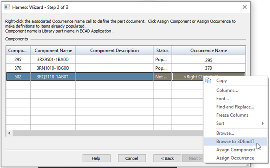

Using step 2 of the Harness Wizard
Use the Harness Wizard - Step 2 of 3 dialog box to specify:
-
Assign components to a Component ID
-
Assign occurrences of component part files already in the assembly
-
Populate components into the assembly
-
Assign components
If you do not use the Assign Terminals command to make your component and terminal assignments before running the wizard, your component file will contain a component that has not been assigned. If your file contains an unassigned component, the component will be displayed in orange in the table. You do not have to exit the wizard to assign components.
To assign a component:
-
Click the component in the Components table.
-
Click the Assign Component command.
-
Click the part you want to assign the component to. The component is populated in the table and the Status and Occurrence Name columns are no longer highlighted.
You can right-click the Occurrences Name column for the component and click Browse on the shortcut menu to search for the part.
Note:A part can contain only one component.
-
-
Assign occurrences
When components are imported prior to running the wizard, Solid Edge automatically assigns an instance to all duplicate parts in the assembly based on the order in which the parts are encountered. If the occurrences get out of order, you can use the Assign Occurrence command to change the occurrences for a component.
To assign an occurrence when a component has already been assigned:
-
Click the highlighted row for the component containing the occurrence you want to change.
-
Click the Assign Occurrence button.
-
Click the component you want to assign the occurrence to.
If the same part file is selected, the two part files swap instances. If the selected part is not associated with a component, the part is assigned to the highlighted component.
To assign an occurrence when a component has not been assigned:
-
Click the Assign Occurrence button.
-
Click the component you want to assign the occurrence to.
If the selected part is not associated with a component, the part is assigned to the highlighted component. If the part is associated with a component, an error message is displayed.
-
-
Populate components
If a part listed in the components file is missing from the assembly, you can populate the component while in the harness wizard. All parts must be populated before you can proceed to the next step in the wizard. You can add the parts through the wizard or you can add them manually.
To populate a component:
-
Right-click in the Occurrence column for the highlighted component.
-
On the shortcut menu, click Browse to display the Open dialog box.
-
Select the appropriate part and click the Open button.
-
Click the Populate button.
Note:You do not have to click the Populate button after each browse. You can browse for all parts and then click the Populate button.
You can right click the component that is not present in the assembly and click Browse to 3Dfindit on the shortcut menu to search for a component in the 3Dfindit portal, retrieve the component, and populate it in the assembly file in a single operation.

When populating components in an assembly, click the Populate Options button to display the Harness Populate Options dialog box, which allows you to define information for an array of the components being brought into the assembly.
The array contains information about the components, but it does not know where the parts associated with these components should be placed in the assembly. Since the part position is unknown, the parts are placed on the Top (XY) reference plane. Use the Assemble command to position the parts in the appropriate location after the wizard is complete.
-
For additional information about using the wizard, continue with Using step 3 of the Harness Wizard.
How do I
Use Harness Wizard to create a harness designAssign component and terminal names
Edit the definition of a wire harness conductor
Create a Harness report
Learn more
Creating a wire harness automaticallyUsing step 1 of the Harness Wizard
Using step 3 of the Harness Wizard
Mapping electrical component ids in PathFinder
Look up more details
Harness Wizard commandHarness Populate Options dialog box
Harness Wizard - Step 1 of 3
Harness Wizard - Step 2 of 3
Harness Wizard - Step 3 of 3
Linking 3D Electrical parts in Wiring Harness
Connection Options dialog box
Assign Terminals command
Assign Terminals dialog box
Properties command (Electrical Routing)
Properties dialog box (Electrical Routing)
Custom Attributes dialog box
Edit Definition command (Electrical Routing)
Edit Definition command bar
Harness Reports command
Harness Reports dialog box